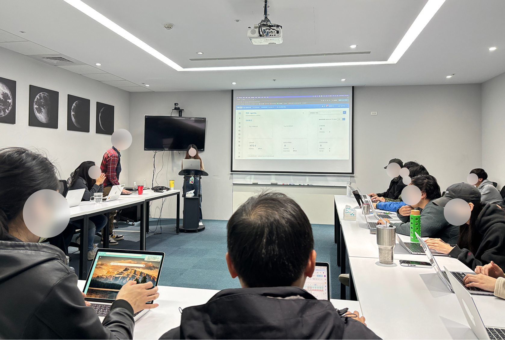

Flexible Booking Dates
A new feature was added to the "Rezio Booking System," allowing users to define specific single or multiple dates, rather than a continuous time period, and set prices for those specific dates.
• Supports payments through 5 payment service providers
• More than 27 countries
TIMELINE
- 2025/4~ 2025/6
- 2 months
MY ROLE
- Led design, worked with PM, FE, BE, QA, and Data Analysts
Impact
- • Reduced interaction risks and improved engineering scalability, saving 2 weeks of development time.
- • Identified risks in related features early, preventing production issues and shortening PM/R&D cycles by 3 weeks.
- • Launched a monetizable feature that lifted revenue by 10%.
Brief
In the summer of 2025, my team gradually transitioned from a group of three to just myself. The two teammates I had originally assigned—who once brought fresh perspectives to improve long-standing pain points—left the project due to changes in their personal plans.
At that time, the project had reached the stage where the main features were completed and a new "Wish Feature" needed to be added.
After taking over, I had to quickly familiarize myself with the newly established Design System, file structure, and hand-off process.
Meanwhile, I needed to design a new type of setting feature under an incomplete Design System and optimize potential risks within the existing UI.
Problem
Through user interviews with AMs and BDs, we learned how their clients configure dates using the current system. Many had to select numerous "excluded dates" just to achieve specific-date scheduling.
Challenge
A. Handling Large Variations in Specific Dates
• Specific dates vary widely—from 1–2 days for short events to 200+ days for year-round activities. The key design goal was to show all dates at a glance without clutter, while keeping pricing visible on the first screen.
• If "Specific Dates" must align with the original "Base Settings," pricing information can become confusing, requiring a review and redesign of the setting logic.
B. Risk of Layout Breaks in Shared Components
The left-side "Special Pricing Menu" is a shared component. Known layout issues in multilingual contexts need to be considered.
C. Complex Integration with Existing Setting Logic
The Design System's input error style may not be immediately visible or easily located within the "Price Settings" feature.
Cross-Functional Discovery
Before the design phase, I organized a cross-functional kick-off session with key stakeholders to align on business priorities and proactively identify technical constraints.
Following the initial design, we held regular, small-group iterative reviews, where team members openly provided valuable insights to refine and advance the design collaboratively.
Design Principles
- Specific dates visible at a glance
- Intuitive and no learning curve
- Color distinction without confusion
- Limited height to keep pricing visible below
- Display only one special price at a time
- Error checks must remain visible and not be blocked
Design Decisions & Rationale
A. Special pricing display area
Design 1
This type of pagination requires multiple clicks to view all specific dates, and it makes it difficult to see everything at a glance.
Design 2
The hierarchy between year, month, date, and session information is unclear.
Design 3
At the same time, it retains the advantages of both clear visibility and efficient content organization.
B. Menu for switching special pricing
Original version
In multi-language environments, long text strings often result in “...”.
Design 1
Space savings are minimal, and the text display area remains insufficient.
Design 2
The funnel icon may not be immediately understood by all users.
Design 3
There is now more space to accommodate longer text strings.
C. Error states for the two types of pricing tables
Design 1
A temporary solution that follows the original Design System but adds a shared error message at the bottom left for better integration.
Design 2
Changed the error background from the input field to the entire row for better visibility, but with limited adaptability and a need to adjust the badge style.
Design 3
Only the input field background is marked with the error color, which avoids modifying the badge style but results in unclear visual semantics.
User Test
The sessions were jointly organized by the Design and PM teams, with members taking turns as moderators, observers, and summary facilitators.
- Four user test sessions were conducted based on job roles and departments: Pilot Test 1 (RD), Pilot Test 2 (PM), Formal Test 1 (AM), and Formal Test 2 (BO).
- Participants and observers sat in pairs, while the moderator projected the test tasks to ensure everyone stayed synchronized and on schedule.
- Each session was limited to one hour. After completing the tasks, the moderator and participants stayed to fill out the questionnaire.
- Observers moved to another meeting room to discuss and consolidate their findings, then returned to the main room for a debrief led by the summary facilitator.
- After the sessions, we used the SUS to evaluate usability and collaborated with the PMs to refine and adjust the features that needed improvement.

The Final Design
1. The text space for the Special Price menu has been expanded.
In the previous design, all special prices were shown at once and distinguished by color. The new design simplifies the view by displaying only the price that needs to be edited at the moment, resulting in a clearer and more focused user flow.
2. Only display necessary information
Display a specific date badge when adding a special selling price
3. Display one price date or session at a time
In the previous design, all special prices were shown at once and distinguished by color.
4. The pricing table's design system underwent only minor adjustments
The input error style in the Design System remains unchanged, but the Field component now includes a new error style with red text displayed at the bottom left.